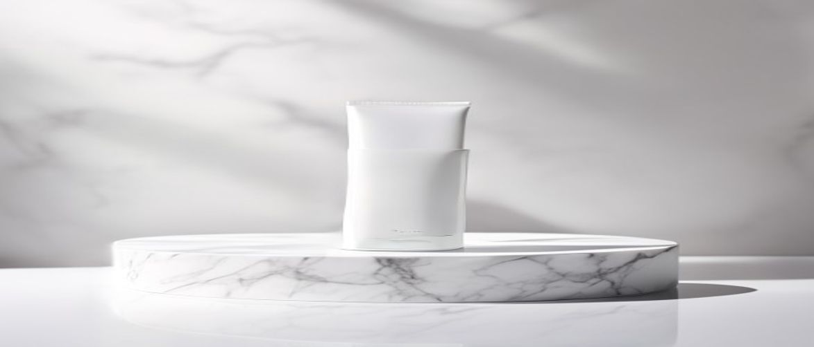

Navigating the vast world of clinical skincare can be challenging, but understanding potent formulations is key to a healthy complexion. Today, we're delving into whether the **is clinical moisturizing complex** truly lives up to its reputation for delivering exceptional hydration and skin barrier support.
This premium moisturizer is specifically designed to provide comprehensive benefits, addressing concerns from dryness and sensitivity to environmental protection. Therefore, for those seeking a sophisticated solution to enhance their daily professional skincare routine, exploring its efficacy is essential.
The iS Clinical Moisturizing Complex stands out as a clinical formula, meticulously crafted to offer more than just surface-level hydration. Its advanced blend of ingredients works synergistically to support overall skin health, promoting a resilient skin barrier and improved skin texture.
This dermatologist-tested product is renowned for its ability to deliver sustained moisture without feeling heavy or occlusive. Furthermore, it incorporates potent antioxidants, providing comprehensive protection against environmental stressors that can lead to premature aging.
The iS Clinical Moisturizing Complex is ideal for individuals with dry, dehydrated, or mature skin seeking a powerful hydrating solution. Its gentle yet effective formula also makes it suitable for hypersensitive skin or those recovering from aesthetic procedures, as it aids in soothing and restoring the skin barrier.
Additionally, its non-comedogenic properties mean that even those with combination or mildly acne-prone skin can benefit from its nourishing effects without concerns of clogged pores. As a result, it’s a versatile choice for anyone looking to elevate their skincare regimen with a medical-grade skincare product.
The efficacy of the iS Clinical Moisturizing Complex stems from its meticulously selected blend of active ingredients, each playing a vital role in hydrating, protecting, and revitalizing the skin. Understanding these components helps highlight why this clinical formula delivers such impressive results.
This thoughtfully crafted composition ensures that every application contributes to a healthier, more resilient complexion. Therefore, it's more than just a moisturizer; it's a targeted treatment for various skin concerns, making it a cornerstone of a robust professional skincare routine.
| Ingredient / Feature | Skin Benefit / Scent Role |
|---|---|
| Sodium Hyaluronate (Hyaluronic Acid) | Attracts and retains up to 1,000 times its weight in water from the atmosphere, providing intense and lasting hydration to the skin. |
| Glycerin | A powerful humectant that draws moisture from the air into the skin, preventing dryness and supporting the skin barrier. |
| Squalane | A plant-derived emollient that mimics natural skin lipids, offering deep moisturization and enhancing skin suppleness without a greasy feel. |
| Tocopherol (Vitamin E) | A potent antioxidant that protects cells from oxidative damage caused by free radicals and environmental stressors. |
| Retinyl Palmitate (Vitamin A) | A mild retinoid that promotes cell turnover, improves skin texture, and supports collagen production, contributing to anti-aging benefits. |
Sodium Hyaluronate, a derivative of hyaluronic acid, is a humectant renowned for its incredible ability to attract and hold vast amounts of moisture. When applied topically, it penetrates the skin to deliver deep, long-lasting hydration, plumping the skin and reducing the appearance of fine lines.
This ingredient is crucial for maintaining the skin's hydration levels, thereby supporting a healthy skin barrier function. It ensures the skin remains supple, smooth, and well-protected against environmental dryness, making it a cornerstone of effective moisturization.
Clinical studies show that hyaluronic acid can hold up to 1,000 times its weight in water, making it one of the most effective hydrating agents in skincare.
Tocopherol, or Vitamin E, is a fat-soluble antioxidant vital for protecting the skin from damage caused by free radicals. These unstable molecules are generated by exposure to UV radiation and pollution, leading to premature aging and cellular damage.
By neutralizing free radicals, Vitamin E helps preserve the integrity of skin cells and lipids, supporting overall skin health and resilience. Additionally, it aids in maintaining skin moisture and has soothing properties, contributing to a calmer, healthier complexion.
To maximize the benefits of your iS Clinical Moisturizing Complex, proper application within your daily skincare regimen is crucial. Following a consistent routine ensures optimal absorption and effectiveness, leading to visibly healthier and more radiant skin.
Remember, this is a concentrated clinical formula, so a small amount goes a long way. Incorporating it correctly will enhance its ability to hydrate, protect, and rejuvenate your skin, particularly when used after targeted treatments.
One common mistake is applying too much product, which can lead to a heavy feeling or unnecessary residue on the skin. Another error is neglecting to cleanse properly beforehand, which can hinder absorption and diminish the moisturizer's efficacy.
Furthermore, avoid rubbing the product aggressively into your skin, as this can cause unnecessary friction and irritation, especially for sensitive complexions. Gentle patting and smoothing motions are always preferred for delicate facial skin.
Always perform a patch test on a small area of skin before full application, especially if you have hypersensitive skin or are introducing a new product to your routine.
Understanding the strengths and weaknesses of any skincare product is vital for making an informed decision. The iS Clinical Moisturizing Complex, while highly regarded, presents a unique set of advantages and considerations for users.
Its clinical formulation and targeted benefits make it a standout choice for many, yet certain aspects might influence individual preferences or budget constraints. Therefore, weighing these factors carefully can help determine if it aligns with your specific skincare needs.
Prospective users often have specific questions about integrating high-performance products into their routine. Here are some of the most common inquiries regarding the iS Clinical Moisturizing Complex, addressing its suitability and usage.
These answers aim to provide clarity and confidence, ensuring you can make an informed decision about this medical-grade skincare solution. Understanding these details is key to unlocking the full potential of your skincare regimen.
Yes, the iS Clinical Moisturizing Complex is formulated with sensitive skin in mind. Its gentle, non-irritating ingredients are dermatologist-tested and designed to soothe and hydrate without causing adverse reactions, making it an excellent choice for hypersensitive skin types.
Absolutely. While primarily a moisturizer, the iS Clinical Moisturizing Complex contains antioxidants like Vitamin E and a mild retinoid (Retinyl Palmitate) that help protect against environmental damage and promote cellular renewal. These ingredients contribute to a smoother skin texture and a reduction in the appearance of fine lines, offering gentle anti-aging benefits.
For best results, the iS Clinical Moisturizing Complex can be used twice daily, both in the morning and at night. Apply it as the final step in your skincare routine after cleansing and any targeted serums, ensuring consistent hydration and protection throughout the day and night.
Yes, this moisturizing complex creates an excellent, smooth base for makeup application. Its non-greasy formula absorbs well into the skin, providing hydration without interfering with foundation or other cosmetics. Allow a few minutes for it to fully absorb before applying makeup for a flawless finish.
The **is clinical moisturizing complex** truly stands out as a top-tier option for those seeking advanced hydration and comprehensive skin benefits. Its blend of potent humectants, emollients, and antioxidants works synergistically to improve skin barrier function, provide lasting moisture, and offer significant environmental protection.
While it represents an investment, its medical-grade formulation and dermatologist-tested efficacy make it a valuable addition to any professional skincare routine, especially for dry, sensitive, or mature skin types. Elevate your skincare game and experience the transformative power of clinical hydration today.
Have questions or a comment on the post? Send us a message and we will get back to you soon.